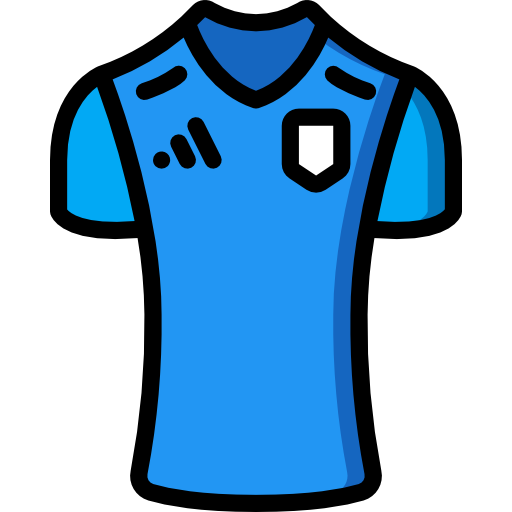

ประวัติการก่อตั้ง
สโมสรก่อตั้งขึ้นเมื่อ พ.ศ. 2513 ภายใต้ชื่อการไฟฟ้าส่วนภูมิภาค ต่อมาได้เปลี่ยนเป็นชื่อ บุรีรัมย์ ยูไนเต็ด ในปี พ.ศ. 2555...
ชุดเหย้า/เยือน
| ชื่อชุด | ตัวอย่างชุด | หมายเหตุ |
|---|---|---|
| ชุดเหย้า |  | |
| ชุดเยือน |
ผู้เล่น
- ศิวรักษ์ เทศสูงเนิน (GK)
- ศศลักษณ์ ไหประโคน (MF)
- พรรษา เหมวิบูลย์ (DF)